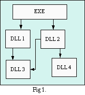
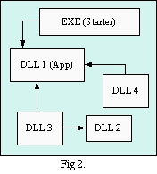
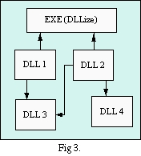
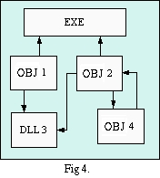

What's edllLatest NewsDLL limitation The usual solution The sub-DLL solution The Gimp solution The edll solution LinksThe edll ReferenceRequirements Versioning License Document License Undefined Symbols TODO list SF Project Download tarball MD5 EDLL at m2osw.com Old Doc Other projects
|
| |
| This project is hosted by: Thank you! |
Welcome to the edll home page. This page presents the library, the reasons behind creating it and how to use it. The library already works, but it is not yet finished. If you can help, I'll very much appreciate (see the TODO list). I'll be glad to give other developers access to the project too.
Version 0.5 now includes a binary and source distribution (.zip files) which works directly with MinGW. Soon, you should also be able to download edll directly from the MinGW project.
For those who downloaded the older version (0.2), there are some good news. The newer version (0.4) now properly handles COMMON sections. This is similar to a BSS section, just under a different name. This means many more programs will be supported by the edll. Special thanks to Patric Stout (see the GPMI project) for his help in deciphering several problems with the newer version of BFD.
Latest News
@news@
DLL limitation
As many people may know, DLLs have one limitation: they cannot have even one undefined symbol. This means at the time you create a DLL, you must link it against other DLLs in order to get all the undefined symbols from the object files resolved in some way.In most cases this is fine. A good design expects that if a DLL a depends on the DLL b, then b doesn't require a. This is true when you create a library in which you offer some functionality for different projects to use.
Now, what we need more and more are plug-ins. Plug-ins are very similar to DLLs. In fact, under Unices (Linux and others) you create shared libraries and you call them plug-ins. Voila. With a DLL this doesn't work too well since it can't have undefined symbols and by default a DLL doesn't link back to your application (EXE). A plug-in is expected to link against the main application.
So? What's the solution? The following attempts to answer this question with the different solutions I've seen in use by other software.
Legend: Fig 1. this figure presents an application (EXE) which needs two DLLs (DLL 1 and DLL 2) to start. DLL 1 needs DLL 3. DLL 2 needs DLL 3 and DLL 4. As you can see, this is a top-down design. It works great when the DLLs are used just as libraries of functions to be used by the executable.
The usual solution
There are several solutions to overcome the DLL limitations, but the most common is certainly to create a way for the plug-ins to receive a pointer to an object defined in the main application. This object can include function calls as well as data (very easy when you use a language such as C++).This is a very good solution for projects such as Apache which have a very precise and small interface to interact with all the different plug-ins.
This looks more or less like this:
/* define one structure like this in your main app. */(note that in Apache, it goes the other way around: the plug-in has a structure which is given to Apache on initialization).
typedef void (*func1)(int arg1, int arg2);
typedef void (*func2)(int arg1, int arg2);
struct plugin_t {
const char *name;
func1 f1;
func2 f2;
};
plugin_t pi_info = { "Info", my_func1, my_func2 };
/* give a pointer to your plug-in */
init = GetProcAddress("init");
(*init)(&pi_info);
Again, this is a good solution if you don't have to offer the plug-ins the use of several thousand functions from the main application. Imagine writing such a structure for even just 100 functions... Good luck! Or maybe you want to read on...
Note: this solution uses DLLs as presented in Fig 1. above.
The sub-DLL solution
Another solution is to create a very small application which only purpose is to link against a large DLL which actually is the real application. This DLL can export all the symbols you need in your plug-ins. This is a good solution and you should go for it if you don't mind.The figure shows that the plug-ins can themselves be linked with other DLLs. This is a good idea since the same DLLs could be used by multiple plug-ins.
One draw back when you use MinGW: you need to create a DLL which links against the GNU DLLs and that's not an option if you need to create a commercial application.
Legend: Fig 2. this figure presents how one can use a DLL to trick the system to link against one's main application. Here we see a starter (the only .EXE file) which requires DLL 1 to work. DLL 1 is actually one's main application. At any time, it is possible to load a plug-in (DLL 3 or DLL 4) which back link to the main application. Note that a plug-in can itself link to a library (DLL 3 is linked to DLL 2).
The Gimp solution
The Gimp authors (and others) have a way to actually trick the linker in creating a DLL plug-in which will back link to the main application.This is fairly simple to do, however, it looks rather messy and cumbersome (it adds about 5 command lines). And it most certainly won't be supported any time soon by the MinGW or GNU people in a seamless fashion.
The solution is to create a .def and .a set of files from your main application (see the -Wl,--output-implib option). These files can later be used to link your DLLs. And yes, this makes the linker think that the symbols are defined in another DLL. And indeed, if you look at it closely, they are defined since MS-Windows will find these symbols in the Gimp application.
So in other words, this solution is to trick the linker and later the LoadLibrary() function to look in the main application for symbols.
Note that there is one draw back: your main application needs to export the symbols the plug-ins need to access. You most certainly can export all of them if you wish. Otherwise, use the
__dllexport
extension
to mark functions to be exported.This is a great trick which I find much better than the two previous solutions.
Legend: Fig 3. this figure presents the Gimp application (EXE) as it stands. It is built in such a way that it looks like a library (i.e. it has a list of Exports and the compiler can generate a .def file) so the plug-ins can be linked against it at compile time. Then the plug-ins (DLL 1 and DLL 2) can be loaded as plug-ins and they will automatically link against the application (EXE) when LoadLibrary() is called.
The edll solution
What I propose (and that's most certainly not the ultimate) is: the Enhanced Dynamic Link Library solution (edll in short).The edll is a library which your application can use to load plug-ins and DLLs. Whenever you need to load a Windows DLL, it uses the LoadLibrary() function from MS-Windows; and for your plug-ins, it uses the BFD library (Binary File Descriptor Library) and it will do the linking (also called relocation) on the fly (Yes! This means, the link is done dynamically at runtime).
Some advantages is that you do not have to load any of your plug-ins until you actually need them. For instance, a 3D tool working on large NURBs could load only the modules it needs for the computations required by these NURBs. This can save a lot of memory. Note that all the plug-ins can have as many undefined symbols as you want at compile time. The runtime dynamic linking will figure out the necessary relocating at the time the plug-ins are loaded.
For those who have used Unices which support undefined symbols all over the place, this library gives you the exact same functionality under the MinGW environment (Cygwin is not supported).
Of course, your main application can't have any undefined symbols. This is because the MS-Windows loader can't deal with that situation. Note that Unices nearly work that way too. At the time the main application is loaded, it needs to have all of its symbols defined internally or using shared libraries. However, many Unices shared libraries can back link into the application. This is still not possible under MS-Windows.
There are a few quick the steps to create plug-ins with the edll (this will need enhancements to make it under the hood). Please, have a look at the tests for more working examples of this.
gcc -o file1.o file1.cOkay. How hard was that? Not too much I hope. What is missing here is a different specification in ld to understand -l to 'like libraries' to object files. It would automatically create the plugin (i.e. assume the -r option) and the necessary entries in the .load section (this section name is not official, if you know better, let me know!) Because the -l option doesn't work yet, we need to have some special data in the .c/.cpp files to specify the libraries required by each plug-ins. These will automatically be loaded when EDLL is used to load the resulting plug-in.
gcc -o file2.o file2.c
ld -r -o plugin.so file1.o file2.o
EDLL_LIBADD("kernel32.dll");
This tells the edll to load kernel32.dll file before
to try
resolving all the symbols in this example plug-in. Note that if your
main
application already links with kernel32.dll,
the loading will be
very fast, but at least one of your plug-ins (or even the main app.)
will need to have this entry in the .load section because all the DLLs
loaded automatically by MS-Windows
at startup are not automatically accessible to the edll environment.Now, in your application, you need to use the open function to read a plug-in:
module = edll_open("plugin.so");
The extension of your plug-in can be anything other than .dll (and I
suggest you don't use .exe, .com, .sys and other well defined
extensions). If you need a symbol from your plug-in, call the
edll_sym()
function. Once you are done with a plug-in, close it with edll_close().Legend: Fig 4. this figure presents the EDLL solution which is to keep all the symbols in all the modules (the debug info is, however, not required). Note that the plug-ins are not DLLs. Instead they are gcc object files with their symbol and relocation information. Plug-ins can specify which other DLL and plug-ins they need (OBJ 1 needs DLL 3) and they can back link to each others (OBJ 2 and OBJ 4 need each others). Note that a DLL still can't back link, but you should use them whenever possible.